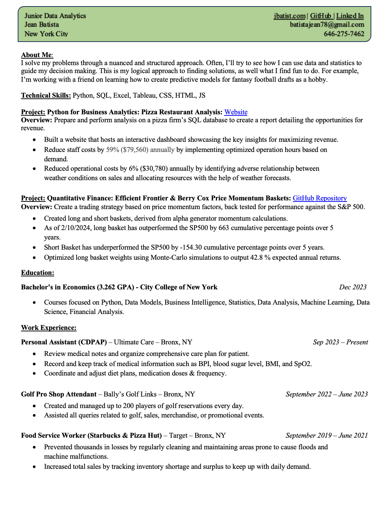

Jean Batista | Data Analytics
Welcome to my portfolio
Click on my resume to expand its size.
About Me
Education
I have a Bachelor's degree in Economics from City College of New York. I took courses in python, business analytics, statistics, financial analysis, machine learning and more.

Work experience
I currently work for a Home care agency as a personal assistant. Some nights I'm responsible for taking care of a sick family member, keeping track of her medical information (BPI, blood sugar level, BMI, Sp02...), giving medicice doses, and being observant of her overall health. I have worked other jobs where I also kept records, and practiced my analytical skills. Such as analyzing what factors correlated greatest with earnings while doing food deliveries at Uber Eats. I am looking for a position where I can learn from experienced people. I am also open to internships and volunteer work.
Technical Skillset
Python, MySQL, Tableau, Excel, HTML, CSS, JS.
Hobbies
I like to code, I mainly enjoy the learning part of it. I like playing chess, In 2023 I was CCNY's president of Chess Club. I try to play often, usually on chess.com while I sit on my patio in the morning. Other times i'll play while in the sauna, it's a good way to pass time. I'm also interested in music, I usually practice piano in my room, although I dont put as much time into it as I should be.
Languages
Proficient in English and Spanish.